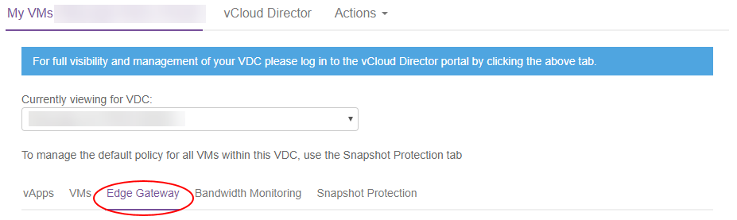

How to upgrade your edge gateway
Overview
This guide shows you how to check the existing version of your edge gateway and, if necessary, upgrade it to the latest available version. If you need any assistance with the upgrade process, contact the support team by raising a service request in the My Calls section of the UKCloud Portal.
Note
In preparation for our planned upgrade to vCloud Director 9.7, you must convert your edges to advanced gateways. For more information, see How to convert your edge to an advanced gateway.
If you're already using advanced gateways, you should upgrade them to 6.4.x.
Intended audience
To complete the steps in this guide you must have access to the UKCloud Portal and vCloud Director.
Checking the current version of your edge gateway
Before you attempt to upgrade your edge gateway, check for the existing version of your edge gateway:
Log in to the UKCloud Portal.
For more detailed steps, see the Getting Started Guide for the UKCloud Portal.
If necessary, switch to the appropriate account.
Click My VMs.

Select the compute service (vOrg) that the edge gateway belongs to.
Select the My VMs tab.

From the Currently viewing for VDC list, select the VDC that the edge gateway you want to check belongs to.
Select the Edge Gateway tab.

From the Select Edge list, select the edge gateway that you want to check.
The VM version field shows the version number of your edge gateway.
If the version is lower than 6.4.x (for example, 6.2.7), make a note that the edge gateway needs upgrading.
Repeat these steps for any other edge gateways that you want to check.
Upgrading your edge gateway to the latest available version
The following steps show how to upgrade your edge gateway using vCloud Director.
Note
Before you begin the upgrade process, bear in mind that there will be a brief network disruption for the networks that are used by the edge gateway instance.
Note
You cannot redeploy edge gateways in the new vCloud Director 9.1 tenant portal, you must first switch to the vCloud Director web console. For more information, see How to switch to the vCloud Director web console from the tenant portal.
In vCloud Director, select the Administration tab.

Double-click the VDC that the edge gateway that you want to upgrade belongs to (or right-click the VDC and select Open).
Select the Edge Gateways tab.

Right-click the edge gateway that you want to upgrade and select Re-Deploy.
In the confirmation dialog box, click Yes.
Important
This step requires downtime as a new VM needs to be deployed for the edge gateway. You should make sure that you have planned for this downtime before proceeding.
You can monitor the status in the Activity Task Detail dialog box.
After the redeployment has finished, you can check the version of the edge gateway again in the UKCloud Portal to confirm that the upgrade has been successful.
Next steps
We recommend that you convert your edge gateway to an advanced gateway to take advantage of more features and to access the new HTML5-based tenant portal. For more information, including known issues, see How to convert your edge to an advanced gateway. All edge gateways must be converted to advanced gateways before our planned upgrade to vCloud Director 9.7.
Feedback
If you find an issue with this article, click Improve this Doc to suggest a change. If you have an idea for how we could improve any of our services, visit UKCloud Ideas. Alternatively, you can contact us at products@ukcloud.com.